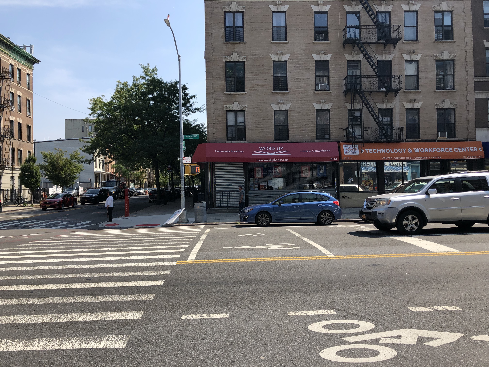
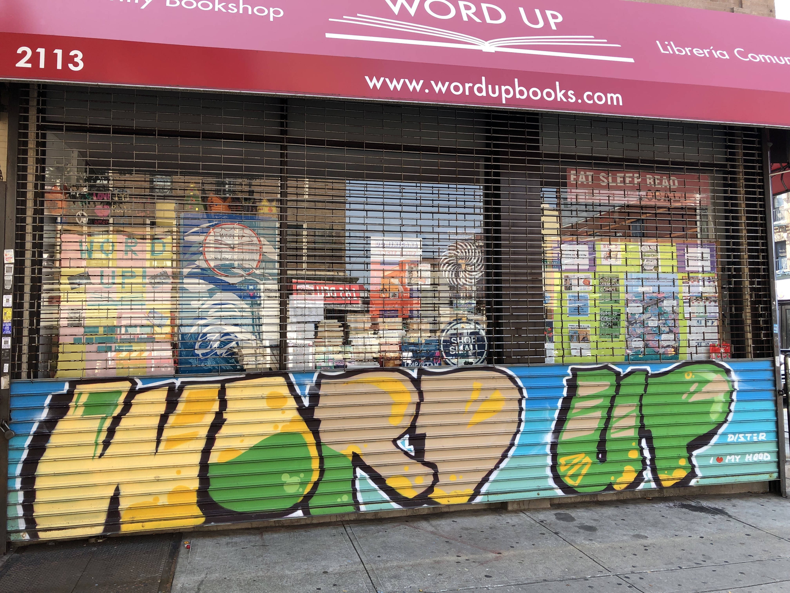
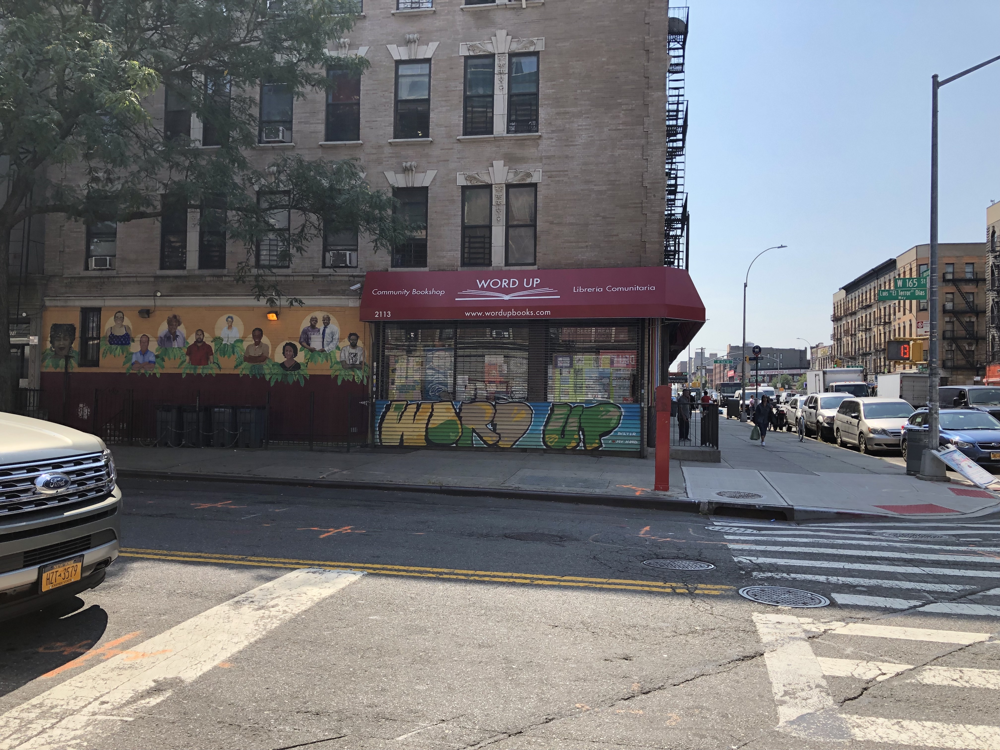

Vista de la calle de Word Up, entre Amsterdam Ave. y la calle 165. Foto por Lisa Salinas
Una tienda de libros en Washington Heights, en el alto Manhattan, se ha convertido en un espacio seguro para comunidades marginadas. Hoy en día, en momentos desafiantes para las minorías y la comunidad Latinx, espacios como Word Up Community Bookshop suponen un lugar de intercambio de ideas y vivencias desde donde se construye comunidad.
“Nosotros como organización no tenemos miedo a decir lo que estamos en contra y lo que apoyamos”, dice Emmanuel Abreu, cofundador de Word Up. “Cuando vienes a este espacio, es inmediatamente obvio que no estamos ‘OK’ con lo que dice (el presidente Donald) Trump”.

Un mural afuera de la tienda Word Up. Foto por Lisa Salinas
Word Up nació como un “pop-up shop” hace ocho años, con la ayuda de residentes locales. Pero la gente de la comunidad lo quiso tanto que el negocio encontró la manera de quedarse en Washington Heights.
La gente simplemente dijo, ‘quédense, les ayudaremos’.
–Abreu explicó
De acuerdo con su página de Facebook, Word Up es operado por voluntarios que representan una diversidad de trasfondos: son de la República Dominicana, México, de la comunidad LGBTQ+, y gente con discapacidades––y hasta con diferentes estatus migratorios. Esta diversidad también se refleja en los tipos de libros que venden.
“Historias de y por la comunidad Latinx definitivamente son una prioridad al momento de ordenar los libros”, dijo Veronica Liu, la fundadora principal de Word Up. “Si es una tienda de libros para un barrio, tiene que reflejar el barrio”.
En un reportaje por el Centro Cooperativo de Libros de Niños, cerca de 249 libros fueron publicados en EE.UU. sobre historias de gente Latinx en el año 2018. Esto es en contraste con más de 3.000 libros publicados.
Además de ser un lugar seguro para la comunidad Latinx y reflejar historias de esta misma comunidad,la propia diversidad en la tienda ha cultivado otras maneras de pensar. Abreu, quien es dominicano, asegura que trabajar en este espacio lo ha educado.
“No interactué tanto con gente en la comunidad LGBTQ+ cuando era joven”, dijo. “Era una tema en el que era ignorante. Decía cosas como, ‘Eso es gay’”.

Una vista de Word Up desde la called 165. Foto por Lisa Salinas.
Alguien en Word Up le explicó a Abreu que decir eso era problemático, y desde entonces no lo ha vuelto a hacer.
La tienda ha atraído a gente blanca también, quienes se han aliada aliados de gente de color.
“Es algo integral porque hay muchísimos americanos blancos que solo son espectadores, y ellos no tienen el lujo de hacer eso”, dijo Dister, quien creció en Washington Heights y pidió no ser identificado más allá de su nombre.
Word Up, asimismo, organiza eventos sobre lo que está pasando en la comunidad y nacionalmente para informar a la gente. La librería, por ejemplo, llevó a cabo una lectura del reporte del fiscal especial de Robert Mueller este pasado verano.
“Tenemos eventos donde hablamos de problemas actuales como gentrificación o la rezonificación que pasó recientemente”, comentó Abreu.
Más que una tienda de libros, Word Up se creó por la comunidad, para la comunidad.
“Este espacio es un escape de las cosas súper ignorantes que enfrentamos todos los días”, aseguró Abreu. “Es un escape de todo eso”.